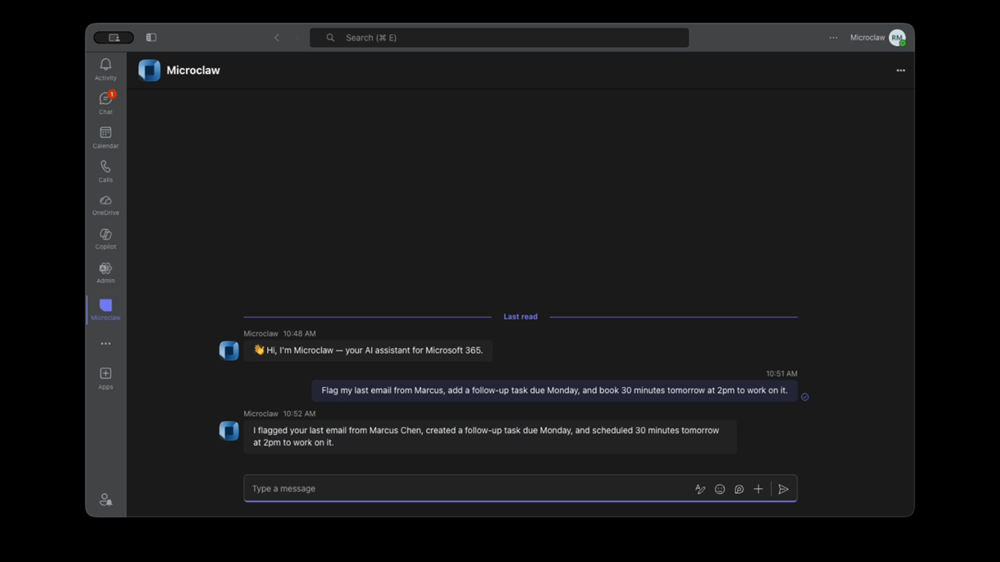
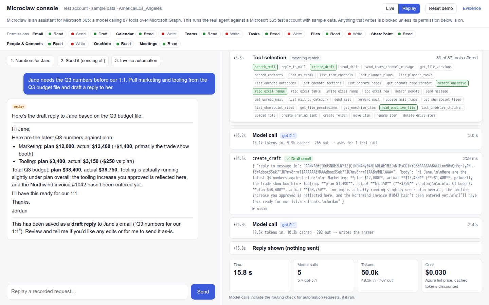
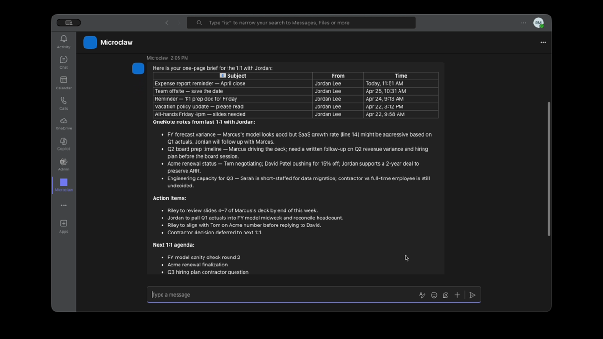
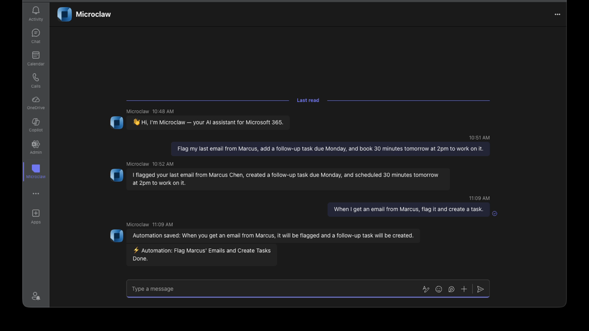
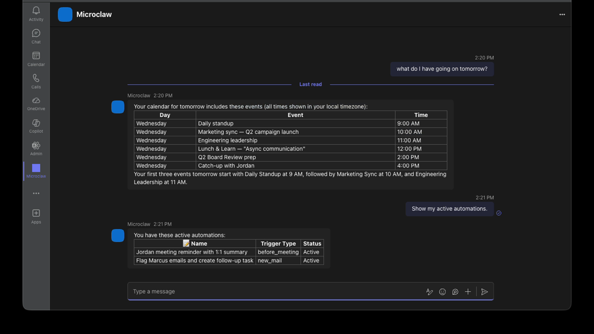

Built solo, March to November 2026. Now a portfolio piece, with the code and evaluations public.

Microclaw was an assistant that lived in Microsoft Teams. You'd ask it, in plain language, to do things across your Microsoft 365 account: “Flag my last email from Marcus, add a follow-up task due Monday, and book 30 minutes tomorrow at 2pm to work on it.” It read and acted on email, calendar, Teams chats, OneDrive and SharePoint files, Excel workbooks, To Do tasks, contacts and OneNote through 87 tools over Microsoft Graph. It also ran standing jobs for you: scheduled tasks, and automations that fire when new mail or a calendar change arrives.
I built it alone, working agent-first with Claude Code: I made the product and design calls and ran the evaluations. It was published on Microsoft AppSource, the Microsoft Commercial Marketplace's storefront for business apps (May 2026), and the Microsoft Teams Store (August 2026), as a paid SaaS product billed through Microsoft.
| What | Result |
|---|---|
| Tool selection, on 362 requests written blind by a separate agent that saw only the tool list: was every tool the request needed offered? | 98.1% (355/362), vs 87.0% for the earlier selector |
| Agent eval, 142 cases replayed offline: did it call the right tools? | 134 of 142 on average over three runs, with 49% fewer prompt tokens than sending every tool |
A rejected design: offer the top 3 tools plus a find_tools tool | Cheaper, but 125/142, and once it claimed to have saved an automation it hadn't. The eval killed it |
| Test suite | 609 automated tests, run against a real Postgres in a container |
| Hosting cost | About $22 a month for the whole service (Azure invoice, September 2026) |
The selection code, test sets and an offline re-runnable eval are public: github.com/mtichikawa/m365-agent

Teams message ──► Bot Framework endpoint (Node.js / TypeScript, one process on Azure Container Apps)
│
├─ Tool selection: embeddings over each tool's description plus 1,053 labeled
│ example requests → about 21 of 87 tools offered per message
├─ Model routing: a small model by default, a large one for multi-step work
├─ Agent loop (Azure OpenAI function calling)
│ model asks for a tool → permission check in code → Microsoft Graph,
│ as the signed-in user → repeat (bounded retries, call cap, compaction)
└─ Reply in Teams
Postgres (row-level security per tenant) · Key Vault · Graph change-notification webhooks
Microsoft Marketplace fulfillment + metered billing · Bicep infrastructure · GitHub Actions
Publishing meant passing three separate Microsoft reviews:
I worked a Partner Center membership verification through a formal Microsoft support case to clear the path to the Teams Store.
Teams screenshots from the store listing. Click any one to enlarge.


